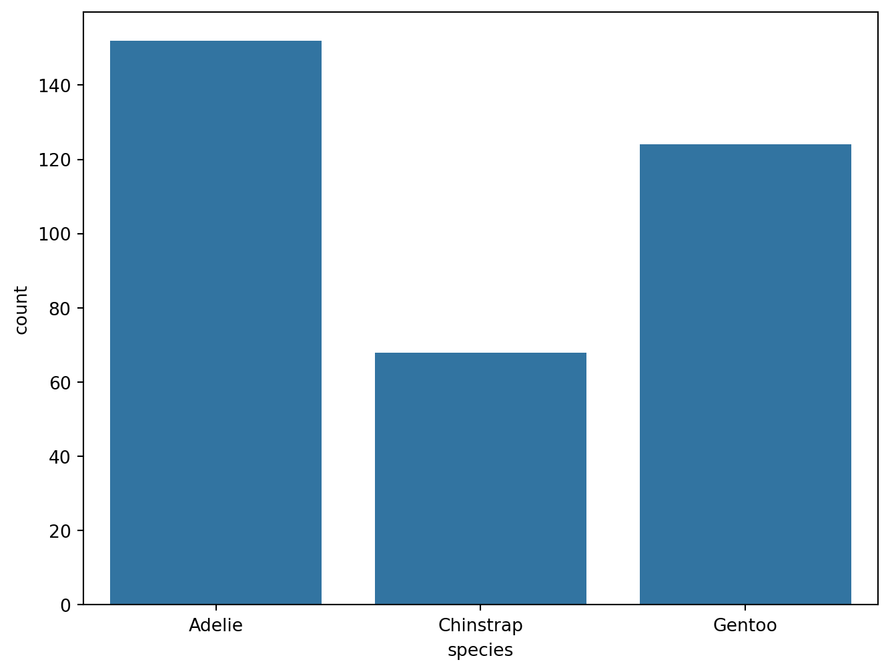
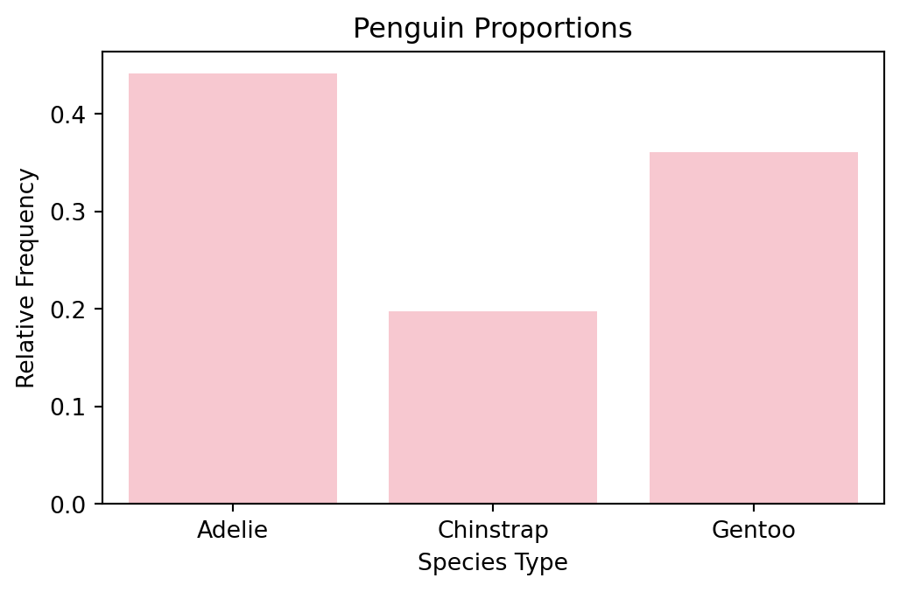
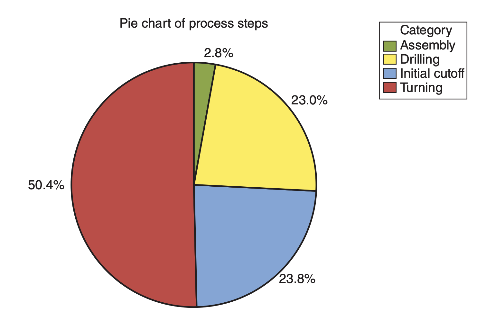
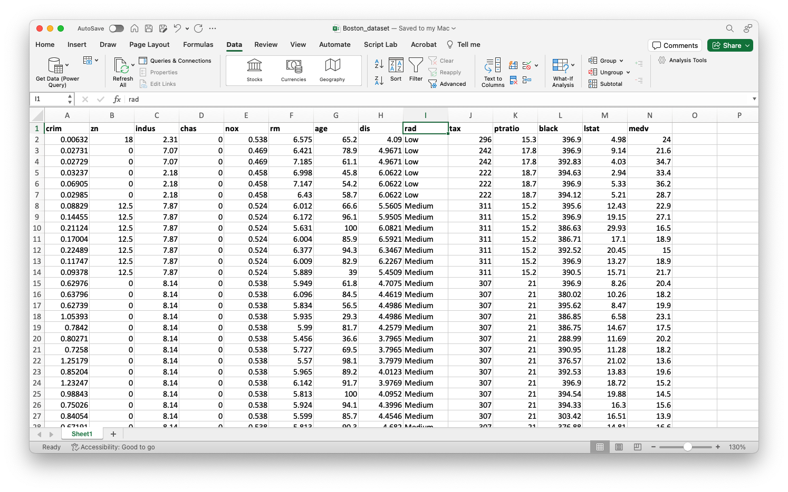
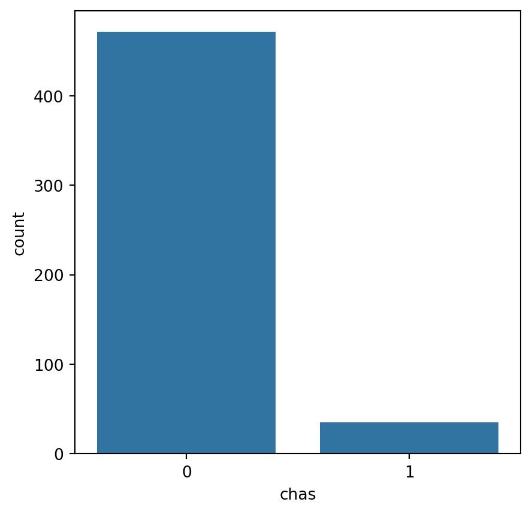
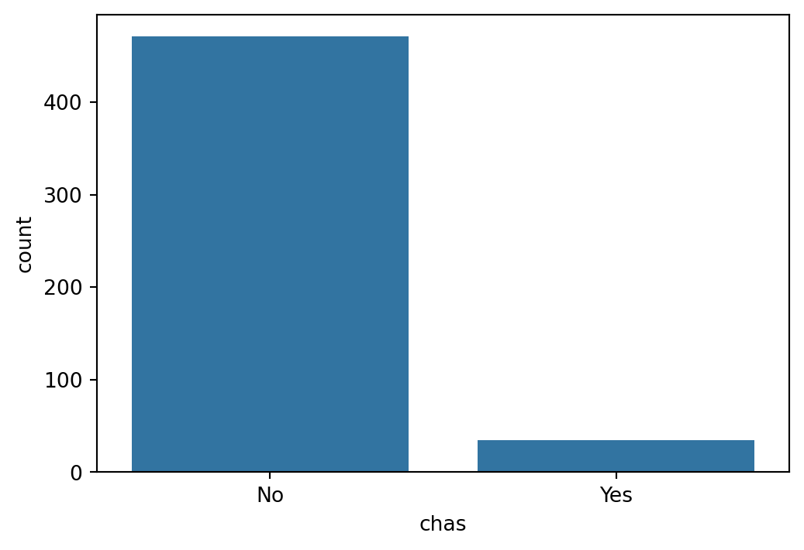
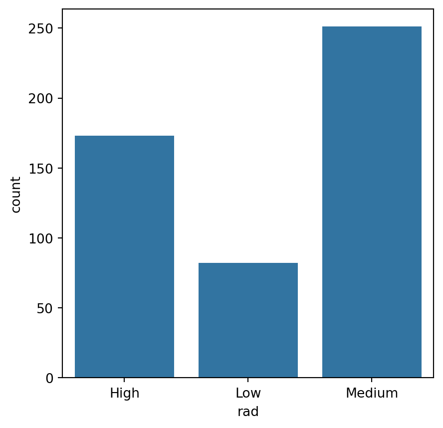
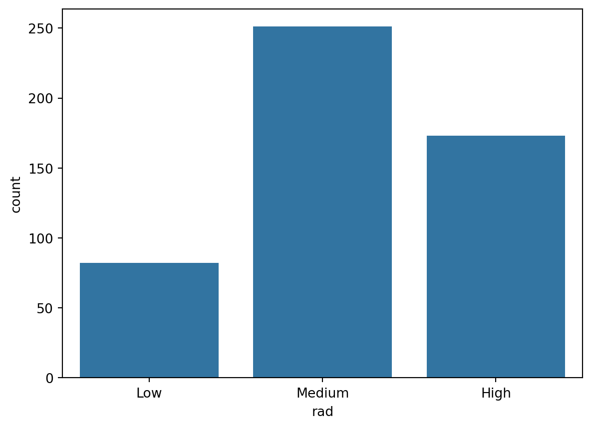
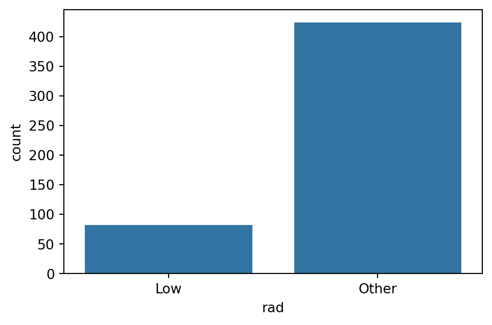

import pandas as pd
import matplotlib.pyplot as plt
import seaborn as snsCategorical Variables
IN2039: Data Visualization for Decision Making
Agenda
- Introduction
- Summary statistics
- Bar chart
- Pie chart
- Transforming categorical variables
First things first
Today, we will use Python to create charts and tables. For this, we will use libraries such as pandas, matplotlib, and seaborn.
Let’s import them before we start.
Example 1: Penguins dataset
We will illustrate today’s concepts using the penguins.xlsx dataset.
Upload it to Google Colab and load it into Python using the following code:
penguins_data = pd.read_excel("penguins.xlsx")
In Google Colab, the file must be placed in the “content” folder.
We will focus on visualizing the following categorical variables: species, island y sex.
(penguins_data
.filter(['species', 'island', 'sex'], axis = 1)
).head()| species | island | sex | |
|---|---|---|---|
| 0 | Adelie | Torgersen | male |
| 1 | Adelie | Torgersen | female |
| 2 | Adelie | Torgersen | female |
| 3 | Adelie | Torgersen | NaN |
| 4 | Adelie | Torgersen | female |
Ensuring Python recognizes categorical variables
Although the variables species, island and sex are clearly categorical, Python does not automatically recognize them as such.
By default, pandas interprets these variables as object types because they contain text.
In pandas, categorical variables should be explicitly converted to the
categorydata type for efficient processing.
Defining categorical variables in Python
To ensure Python correctly recognizes these variables as categorical, we use the astype() function:
# Convert categorical variables to 'category' type
penguins_data[['species', 'island', 'sex']] = (penguins_data
.filter(['species', 'island', 'sex'], axis = 1)
.astype('category')
) Note that we have just replaced the penguins_data object with its new version.
Now, the variables are correctly labeled as categorical.
(penguins_data
.filter(['species', 'island', 'sex'], axis = 1)
.info()
)<class 'pandas.core.frame.DataFrame'>
RangeIndex: 344 entries, 0 to 343
Data columns (total 3 columns):
# Column Non-Null Count Dtype
--- ------ -------------- -----
0 species 344 non-null category
1 island 344 non-null category
2 sex 333 non-null category
dtypes: category(3)
memory usage: 1.5 KBSummary statistics
Summary statistics
. . .
A summary statistic helps us to summarize a list of observations in a simple way.
. . .
The most commonly used statistical summaries for categorical data are:
The frequency of a category is the number of observations that belong to that category.
The relative frequency is the frequency divided by the total number of observations.
Frequency table
Summarizes a categorical variable by counting the values per category.
| Especie | Frecuencia |
|---|---|
| Adelie | 152 |
| Chinstrap | 68 |
| Gentoo | 124 |
| Total | 344 |
Frequency: Number of observations in each category.
Total: Total sum of observations.
Ventajas de las frequencias.
Resumen claro y conciso de los datos categóricos.
Facilita la identificación de patrones y tendencias.
Ayuda en la toma de decisiones informadas.
Frequency table in Python
To construct a frequency table in pandas we use the function .value_counts() together with .filter().
(penguins_data
.filter(['species'], axis = 1)
.value_counts()
) species
Adelie 152
Gentoo 124
Chinstrap 68
Name: count, dtype: int64Relative Frequency Table
Summarizes a categorical variable by calculating the proportion of values per category.
(penguins_data
.filter(['species'], axis = 1)
.value_counts(normalize = True)
)species
Adelie 0.441860
Gentoo 0.360465
Chinstrap 0.197674
Name: proportion, dtype: float64| Specie | Relative Frequency |
|---|---|
| Adelie | 0.4418605 |
| Chinstrap | 0.1976744 |
| Gentoo | 0.3604651 |
| Suma | 1 |
- Relative frequency: Number of observations in each category divided by the total.
La ventaja de la frequencia relativa es que se puede interpretar como una probabilidad. Lo que da mas información.
Bar chart
Bar chart
A bar chart visually represents a frequency or relative frequency table.
The frequency (or relative frequency) is represented by a bar with a proportional height.
We create the bar chart using the function countplot() from seaborn.
# Create plot.
plt.figure(figsize=(8,6))
sns.countplot(data=penguins_data, x="species")
plt.show()
Plot for relative frequency
If you want to plot relative frequencies, you can normalize the counts.
# Create plot.
penguin_counts = penguins_data["species"].value_counts(normalize=True)
plt.figure(figsize=(6, 3.3))
sns.barplot(x=penguin_counts.index, y=penguin_counts.values)
plt.ylabel("Relative Frequency")
plt.show()
Example: Improving the graph
Using Seaborn’s customization tools, we enhance the graph:
plt.figure(figsize=(6, 3.5))
sns.barplot(x=penguin_counts.index, y=penguin_counts.values, color="pink")
plt.title("Penguin Proportions")
plt.xlabel("Species Type")
plt.ylabel("Relative Frequency")
plt.show()
Pie chart
Pie chart
A pie chart divides a circle into sections representing different categories of a variable.
The size of each section corresponds to the relative frequency of that category.
It provides a quick visual comparison of proportions.

Pie charts versus bar charts.
Bar charts can serve as a good way to show comparisons between categories. It is generally observed that new trends tend to shy away from using pie charts, as it is difficult for the human eye to judge the exact angle that shows the value of a category in a pie chart.
Mini-Activity (solo mode)
Ask ChatGPT
- Go to https://chat.openai.com/
- Ask ChatGPT how to create a pie chart using matplotlib and seaborn in Python
- Adapt the code to create a pie chart for the
islandvariable inpenguin_data.
Transforming categorical variables
Apply Principle 3
Apply graphic design principles.
. . .
We can improve categorical variable charts using these techniques:
- Re-label categories to make them more informative.
- Re-order categories to follow a logical sequence.
- Collapse categories to simplify the chart.
Example 2: Boston Housing Dataset
This dataset contains information collected by the U.S. Census Bureau on housing in the Boston, Massachusetts area.


The dataset is in Boston_dataset.xlsx. Upload it to Google Colab and load it into Python using:
Boston_dataset = pd.read_excel("Boston_dataset.xlsx")
Boston_dataset.head()| crim | zn | indus | chas | nox | rm | age | dis | rad | tax | ptratio | black | lstat | medv | |
|---|---|---|---|---|---|---|---|---|---|---|---|---|---|---|
| 0 | 0.00632 | 18.0 | 2.31 | 0 | 0.538 | 6.575 | 65.2 | 4.0900 | Low | 296 | 15.3 | 396.90 | 4.98 | 24.0 |
| 1 | 0.02731 | 0.0 | 7.07 | 0 | 0.469 | 6.421 | 78.9 | 4.9671 | Low | 242 | 17.8 | 396.90 | 9.14 | 21.6 |
| 2 | 0.02729 | 0.0 | 7.07 | 0 | 0.469 | 7.185 | 61.1 | 4.9671 | Low | 242 | 17.8 | 392.83 | 4.03 | 34.7 |
| 3 | 0.03237 | 0.0 | 2.18 | 0 | 0.458 | 6.998 | 45.8 | 6.0622 | Low | 222 | 18.7 | 394.63 | 2.94 | 33.4 |
| 4 | 0.06905 | 0.0 | 2.18 | 0 | 0.458 | 7.147 | 54.2 | 6.0622 | Low | 222 | 18.7 | 396.90 | 5.33 | 36.2 |
We concentrate on the following variables:
chas: Whether the house is next to the Charles River (1: Yes and 0: No)rad: Index of accessibility to radial highways (Low,Medium,High).
Remember…
Make sure Python correctly recognizes categorical variables.
Boston_dataset[["chas", "rad"]] = (Boston_dataset
.filter(["chas", "rad"], axis = 1)
.astype("category")
)Initial graph
Let’s create a bar chart for chas.
plt.figure(figsize=(5, 5))
sns.countplot(data=Boston_dataset, x="chas")
plt.show()
However, the categories are not very informative.
Re-labeling categories
To improve readability of the bar chart, rename the categories in the chas variable.
- Check the category names in the variable using the
unique()function.
Boston_dataset["chas"].unique() [0, 1]
Categories (2, int64): [0, 1]- Replace the category names using
.map().
Boston_dataset["chas"] = Boston_dataset["chas"].map({0: "No", 1: "Yes"})Let’s see what happens now.
plt.figure(figsize=(6, 4))
sns.countplot(data=Boston_dataset, x="chas")
plt.show()
Much better! 😃
Re-ordering Categories
Now, let’s create a bar chart for rad.
plt.figure(figsize=(5, 5))
sns.countplot(data=Boston_dataset, x="rad")
plt.show()
The categories do not follow a natural order from left to right: Low, Medium, y High.
To have the desired order in the categories, we must be more explicit when defining te categorical variable.
Boston_dataset["rad"] = pd.Categorical(Boston_dataset["rad"],
categories=["Low", "Medium", "High"],
ordered=True)plt.figure(figsize=(7, 5))
sns.countplot(data=Boston_dataset, x="rad")
plt.show()
Much better! 😃
Collapsing
Some categorical variables tend to have many categories. For example, states in a country or postal codes. In these cases, it can be difficult to visualize all the categories in a single graph.
One strategy for developing an effective visualization is to collapse categories.
For example, in the variable rad, we can collapse the categories Medium and High into a single category called Other.
To collapse categories in pandas, we use the replace() function.
Boston_dataset["rad"] = Boston_dataset["rad"].replace({"Medium": "Other", "High": "Other"})
Boston_dataset["rad"].value_counts()/var/folders/ft/d5k53fmn1qb_dy2c17zszcm40000gp/T/ipykernel_27868/2395826107.py:1: FutureWarning: The behavior of Series.replace (and DataFrame.replace) with CategoricalDtype is deprecated. In a future version, replace will only be used for cases that preserve the categories. To change the categories, use ser.cat.rename_categories instead.
Boston_dataset["rad"] = Boston_dataset["rad"].replace({"Medium": "Other", "High": "Other"})rad
Other 424
Low 82
Name: count, dtype: int64Collapsing categories simplifies the graph
plt.figure(figsize=(5.5, 3.5))
sns.countplot(data=Boston_dataset, x="rad")
plt.show()
It also allows us to emphasize a category like Low and see how it compares to the other categories (as a whole).